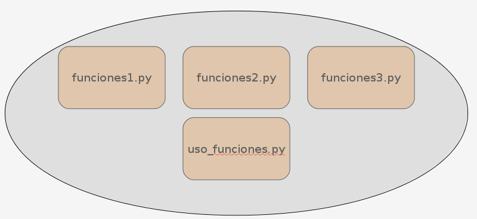
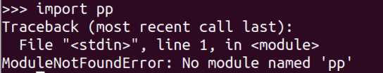
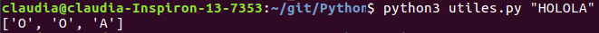
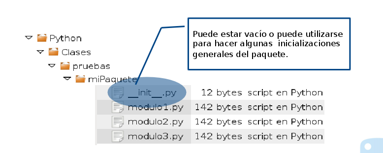
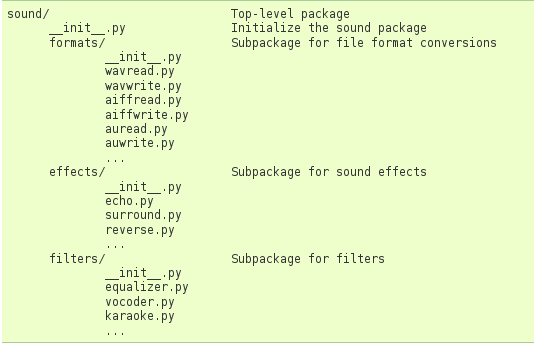

Seminario de Lenguajes - Python
Cursada 2019
Temario
- Modulos y paquetes.
- Módulo pattern.
Repaso: expresiones lambda
- Son funciones anónimas sencillas.
- Forma general: lambda parametros : expresion
- Ejemplo:
def codifico(cadena):
lista_codificada = list(map(lambda c: chr(ord(c)+1), list(cadena)))
return "".join(lista_codificada)
def decodifico(cadena):
lista_decodificada = list(map(lambda c: chr(ord(c)-1), list(cadena)))
return "".join(lista_decodificada)
cadena = input("ingresá una cadena")
secreto = codifico(cadena)
print(secreto)
print("-----------------")
print(decodifico(secreto))Repaso: funciones en Python
def funcion_rara(uno, dos, *arguments, **keywords):
print(uno)
print(dos)
print("=" * 40)
for arg in arguments:
print(arg)
print("=" * 40)
for kw in keywords:
print(kw, ":", keywords[kw])
funcion_rara("uno", "dos", "tres", "cuatro", par1="par1", par3="par3")" Los parámetros con valores por defecto, ¿dónde van?
Volvamos a ver PySimpleGUI de la clase pasada
Diapositiva 35
Módulos y paquetes
Módulos en Python
Un módulo es un archivo (con extensión .py) que contiene sentencias y definiciones.

Sentencia import
- Permite acceder a funciones y variables definidas en otro módulo.
import funciones
import random
- Sólo se importa las funciones. No las ejecuta.
- Para ejecutar una función debo invocarla en forma explícita.
funciones.uno()
random.randrange(10)
- Archivos .py vs. archivos .pyc
Espacios de nombres
- Un espacio de nombres relaciona nombres con objetos.
- En principio podemos pensar en tres espacios de nombres:
- Locales
- Globales
- __builtins__
- Los espacios de nombres se crean en diferentes momentos y tienen distintos tiempos de vida.
- El espacio de nombres que contiene los nombres __builtins__ se crea al iniciar el intérprete y nunca se elimina.
- El espacio de nombres global de un módulo se crea cuando se lee la definición de un módulo y normalmente también dura hasta que el intérprete finaliza.
- El espacio de nombres local a una función se crea cuando la función es llamada y se elimina cuando la función retorna.
Espacios de nombres y módulos
- Cada módulo tiene su propio espacio de nombres.
#módulo1
var_X = 10
def funcion_modulo1():
print(var_X)
#mi prog
import modulo1
var_X = 20
modulo1.funcion_modulo1()- ¿Qué valor imprime este código?
Volvemos al import
- Cuando uso la sentencia import actualizo los espacios de nombres.
import mi_modulo
- En este caso, todos los ítems definidos dentro de mi_modulo serán locales a mi_modulo.
- Lo que agrego al espacio de nombres es el nombre del módulo (mi_modulo).
- Para usarlo debo hacerlo con notación puntual.
import mi_modulo as m
Importando módulos
import funciones
funciones.uno()
- La importación se realización sólo una vez por sesión del intérprete.
- Veamos sobre el ejemplo anterior ( uso_de_modulos y funciones ).
- Si necesito volver a importar: usar reload() incluido en el módulo importlib.
import importlib
importlib.reload(funciones)
from mi_modulo import una_funcion
- Sólo se importa una_funcion de mi_modulo (no el nombre del módulo).
- El único nombre que se agrega al espacio de nombres es una_funcion.
from mi_modulo import *
- En este caso, todos los ítems definidos en mi_modulo formarán parte del espacio de nombres actual.
- Esta forma no está recomendada: podrían existir conflictos de nombres.
¿Dónde buscamos los módulos?
- Veamos qué pasa cuando queremos importar un módulo que no existe:

- Rutas de búsquedas predefinidas son:
- Directorio actual + otros directorios definidos en la variable de ambiente PYTHONPATH
Módulos en Python
- Existe un conjunto de módulos estándares que vienen incluidos con el intérprete.
- Y existen muchos otros que, siendo libres, podemos instalar y usar.
- Ya usamos algunos, ¿cuáles?
Modulos estándares
- Existe una biblioteca de módulos estándar.
- Para usarlos se los debe importar en forma explícita (usando sentencia import).
- Ejemplos: math, random, time, sys, collections, etc.
import math
import random
print(math.gcd(12,16))
print(math.sqrt(81))
print(math.pi)
lista = [1, 2, 3, 4]
print(random.choice(lista))
Módulo sys
- Entre otras cosas, define:
- exit([arg]): sale del programa actual;
- path: las rutas donde buscar los módulos a cargar;
- platform: contiene información sobre la plataforma.
import sys
print(sys.path)
print(sys.platform)
¿Parámetros en la línea de comandos?
import sys
print(sys.argv)
- ¿De qué tipo es argv?
- ¿Qué valores contiene?
- ¿Para qué tipo de programas podemos usar esto?
Más sobre módulos
utiles.py:
def vocales(cadena):
print( list(filter(lambda l: l.lower() in "aeiou", cadena)))uso_utiles.py:
import utiles
utiles.vocales("Holis")- Primero: ¿qué hace?
- ¿Y si queremos invocar esto desde la línea de comandos?
Ejecutando desde consola
- Podemos ejecutar y pasar parámetros desde la consola:

El módulo __main__
- Las instrucciones ejecutadas en el nivel de llamadas superior del intérprete, ya sea desde un script o interactivamente, se consideran parte del módulo llamado __main__, por lo tanto tienen su propio espacio de nombres global.
def vocales(cadena):
print( list(filter(lambda l: l.lower() in "aeiou", cadena)))
if __name__ == "__main__":
import sys
vocales(sys.argv[1])¿Más módulos?
El módulo collections
- Define tipos de datos alternativos a los predefinidos dict, list, set, y tuple.
- Counter: es una colección desordenada de pares claves-valor, donde las claves son los elementos de la colección y los valores son la cantidad de ocurrencias de los mismos.
from collections import Counter
cnt = Counter(['red', 'blue', 'red', 'green', 'blue', 'blue'])
print(cnt)
print(Counter('abracadabra').most_common(1))El módulo collections
- deque: permite implementar pilas y colas.
- deque = (“double-ended queue”)
from collections import deque
d = deque('abcd')
d.append("final") # agrega al final
d.appendleft("ppio")# agrega al principio
elem = d.pop() # eliminar último
elem1=d.popleft() # elimina primeroEl módulo pattern
- Pattern es un módulo que contiene herramientas para:
- Acceder a datos de la web (acceso a Twitter, Wikipedia, motores de búsqueda).
- Procesamiento del lenguaje natural (identificar sustantivos, verbos, adjetivos, etc.).
- Funciones para machine learning y visualización y procesamiento de grafos.
- La versión para Python 2 se puede instalar con pip o descargar de su sitio oficial
- Para Python 3, vamos a usar la versión en desarrollo: https://github.com/clips/pattern
El módulo pattern.es
- Permite trabajar con el análisis sintáctico del idioma.
- Algunas funcionalidades:
- Cambiar sustantivos de singular a plural o viceversa.
- Conjugar verbos.
- Analizar textos.
El módulo pattern.es
from pattern.es import singularize, pluralize
print(singularize('caballos'))
print(pluralize('caballo'))El módulo pattern.es
from pattern.es import conjugate
from pattern.es import INFINITIVE, PRESENT, PAST, SG, PL, SUBJUNCTIVE, PERFECTIVE
print(conjugate('corro', INFINITIVE))
print(conjugate('soy', INFINITIVE))
print(conjugate('soy', PRESENT, 1, SG, mood=SUBJUNCTIVE))
print(conjugate('soy', PAST, 3, SG))
print(conjugate('soy', PAST, 3, SG, aspect=PERFECTIVE))
print(conjugate('soy', PAST, 3, PL, aspect=PERFECTIVE))El módulo pattern.es
from pattern.es import parse, split
frase = "Hoy es un muy lindo dia"
s = parse(frase).split()
print(s)
for cada in s:
for c in cada:
if c[1] == 'VB':
print(c[0])pattern.web
from pattern.web import Twitter
def trending_topics():
print (Twitter().trends(cached=False))
def busco_en_twitter(cadena):
t = Twitter()
i = None
for j in range(3):
for tweet in t.search(cadena, start=i, count=10):
print(tweet.text)
print("-------")
i = tweet.id
trending_topics()
busco_en_twitter("#UNLP")pattern.web
from pattern.web import Wikipedia
article = Wikipedia().search('Villa La Angostura')
for section in article.sections:
print(repr(' ' * section.level + section.title))- Tenemos que ver la estructura de article para acceder a otros elementos.
Paquetes
- Permiten crear una estructura jerárquica de módulos.
- Se acceden por notación puntual.
- Es un directorio donde se ubican los archivos con los módulos.

Paquetes
- Veamos el ejemplo de la documentación oficial de paquetes

import sound.effects.echo
from sound.effects import echo
Paquetes
- __all__: es una variable que contiene una lista con los nombres de los módulos que deberían poder importarse cuando se encuentra la sentencia from package import *.
#Por ejemplo, en sound/effects/__init__.py
__all__ = ["echo", "surround", "reverse"]
- Si __all__ no está definida, from sound.effects import * no importa los submódulos dentro del paquete sound.effects al espacio de nombres.
- Si __all__ no está definida, from sound.effects import * no importa los submódulos dentro del paquete sound.effects al espacio de nombres.
¿Qué vimos hoy?
Resumen
- Módulos en Python: sentencia import.
- Módulos estándares.
- Paquetes.